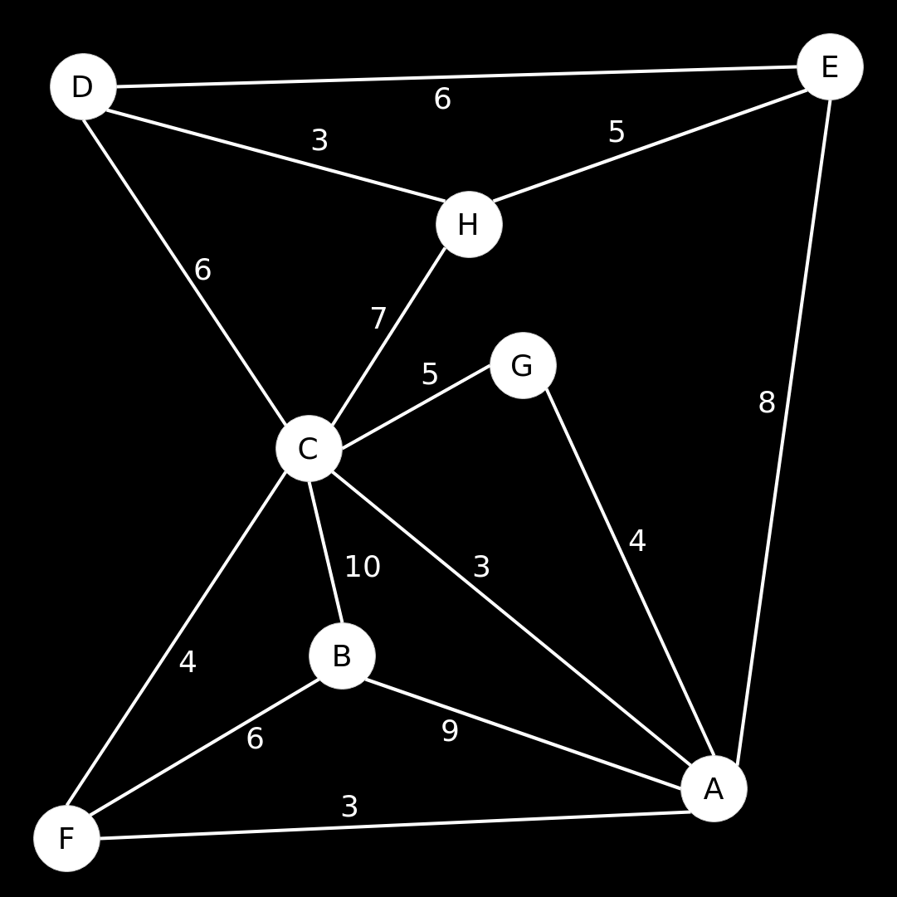
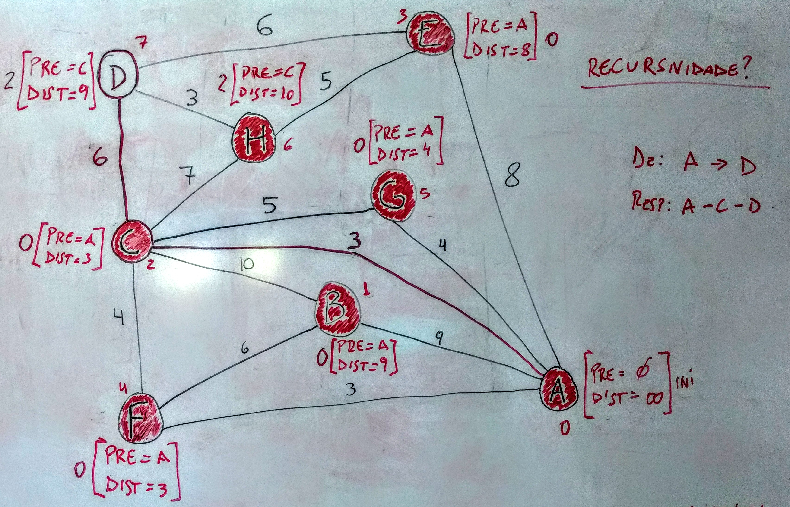
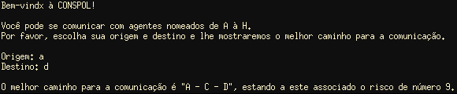

1. Enunciado
O trabalho deve ter uma solução geral; na descrição do problema existe apenas um exemplo que deve ser tomado como base, mas a solução deve ser genérica. Não existe restrição de linguagem, se pode escolher qualquer linguagem de programação que quiser.
O aluno deve entregar o código fonte e um relatório contendo:
- Uma descrição do problema e como o problema pode ser solucionado com a teoria dos grafos;
- Dois exemplos em que o algoritmo possa ser aplicado;
-
Análise do trabalho:
- O que aprendeu;
- As principais dificuldades encontradas no trabalho.
2. Descrição
2.1 Problema
Os agentes A, B, C, D, E, F, G e H são conspiradores políticos. De forma a coordenar seus esforços, é vital que cada agente seja capaz de comunicar-se direta ou indiretamente com todos os outros conspiradores. Esta comunicação, contudo, envolve um certo risto para cada um. Os fatos de risco associados à comunicação direta entre cada par de conspiradores é dada por:
Tabela 1. Tabela dos conspiradores políticos
| A | A | A | A | A | B | B | C | C | C | C | D | D | E |
|---|---|---|---|---|---|---|---|---|---|---|---|---|---|
| B | C | E | F | G | C | F | D | F | G | H | E | H | H |
| 9 | 3 | 8 | 3 | 4 | 10 | 6 | 6 | 4 | 5 | 7 | 6 | 3 | 5 |
Fonte: MOUTINHO (2019)
Todas as outras comunicações diretas são impraticáveis pois exporiam todo o esquema de disfarce. Qual o menor risco total envolvido neste sistema de conexão, ou seja, o menor risco para que cada uma mensagem seja repassada para todos os conspiradores?
2.2 Como pode ser solucionado
Primeiramente, antes de partir para a solução do problema, é importante desenhar o grafo correspondente ao problema; através dele fica mais fácil de visualizar o quadro todo. O texto sugere, ao dizer "comunicação direta entre cada par de conspiradores", que este é um grafo não direcionado. As informações dadas resultam no grafo da Imagem 1.
Imagem 1. Grafo dos conspiradores políticos

Fonte: Elaborada pelo autor utilizando a ferramenta draw.io
Pelo grafo, podemos notar que o problema se resume a encontrar o caminho de menor custo baseado nos pesos das arestas, e, para este fim, podemos utilizar o algoritmo de Dijkstra. Segundo OLIVEIRA (2019, p. 5) "o algoritmo de Dijkstra calcula o caminho mais curto (de custo mínimo), em termos de peso total das arestas, entre um nó inicial e todos os demais nós do grafo; o peso total das arestas será a soma dos pesos de todas as arestas que compõe o caminho".
Sendo esse o elemento de teoria dos grafos que vamos utilizar para resolver o problema, o próximo passo é escolher a linguagem de programação e começar a implementação. Para este problema em particular, a linguagem escolhida foi a C, pois é uma linguagem boa de se trabalhar e possui uma ferramenta poderosa, que são os ponteiros, ótimos para desenvolver grafos e listas.
O primeiro passo para a implementação do algoritmo é codificar o grafo, e podemos fazer isso utilizando uma lista de adjacência. Para definir essa lista, podemos utilizar uma estrutura da seguinte forma:
Código 1. Estrutura da lista de adjacência
typedef struct Vertice { char *nome; int peso[V]; struct Vertice * adjacente[V]; struct Vertice * pre; int dist; } Vertice;
Fonte: Elaborado pelo autor
Nesse caso:
- Nome é o nome do vértice;
- V é o número máximo de vértices;
- Para cada vertice adjacente, em um array de vértices, numerados de 0 a V-1, há um peso corresponde, em um array de pesos, de número igual;
- Há um vértice nomeado "pre" em cada estrutura de nó, onde este é o vértice anterior do caminho;
- Há um valor correspondente à distância (dist).
Também é importante criar uma lista encadeada, para que esta possa salvar informações úteis:
Código 2. Estrutura da lista encadeada
typedef struct Lista { struct Vertice * vertice; struct Lista * proximo; } Lista;
Fonte: Elaborado pelo autor
Definidas as estruturas das listas, é necessário apenas criar as funções para inserir, remover e listar elementos da lista encadeada. Para essa implementação, foi criada uma lista de adjacência do grafo dado e uma lista encadeada com os vértices organizados em órdem alfabética. Todas essas funções e definições podem ser encontradas no header "grafo.h".
O próximo passo é codificar o
algoritmo de Dijkstra. Para isso, é
necessário que o utilizador do programa escolha os vértices de origem
e destino. Em seguida, para cada input, é necessário criar dois novos
ponteiros, do tipo
Vertice
que vão apontar para os vértices de origem e destino. Uma maneira de
atingir esse objetivo é utilizando a lista encadeada definida acima.
Para começar a escrever a lógica do Dijkstra, é importante utilizar alguma ferramenta gráfica, pois, computacionalmente, pode ficar difícil de entender o que está acontecendo. Para a primeira implementação, o caminho escolhido foi de A à D. Uma boa ferramenta que ajudou a acompanhar cada fase de implementação do algoritmo foi o quadro branco, sempre útil ao trabalhar com problemas complexos como este. Para este exemplo, foram definidos todos os passos que o algoritmo deve seguir e o que vai acontecer em cada um desses passos. É possível visualizar a solução do problema na Imagem 2.
Imagem 2. Exemplo de solução para a comunição de A à D

Fonte: Elaborada pelo autor
Com todos os elementos em mente, podemos efetivamente começar a escrever o algoritmo. Primeiro, escrevemos as funções auxiliares definidas no Código 3, que, respectivamente, desempenham as seguintes funções:
-
Requisitar e retornar um
charescolhido para ser utilizado na funçãoopcoes; - Retornar um número, [0-7], que corresponde às letras [A-H], independente da sua capitalização, o que torna o algoritmo case insensitive;
- Retornar o vértice escolhido.
As três funções dependem uma da outra, em ordem, e são necessárias
para o funcionamento do Código 4 no problema definido. Todas essas são
chamadas na função
main, que pode ser visualizada no arquivo
algoritmo.c.
Código 3. Funções auxiliares
int escolha(char *string); int opcoes(char g); Vertice * no(int n);
Fonte: Elaborado pelo autor
A função em Código 4 recebe quatro parâmetros, sendo esses, respectivamente:
- O vértice de origem;
- O vértice de destino;
- Uma lista encadeada com os vértices que devem ser visitados;
- Um contador que conta quantas vezes a função foi chamada.
Código 4. Algoritmo de Dijsktra
int dijkstra(Vertice * o, Vertice * d, Lista * visitar, int c){ visitar = reduzir(visitar); for (int j = 0; j < V; j++){ if (o->adjacente[j] != NULL){ if (o->adjacente[j]->pre == NULL) { o->adjacente[j]->pre = (Vertice*) malloc(sizeof(Vertice)); o->adjacente[j]->pre = o; if (c == 0){ o->adjacente[j]->dist = o->dist + o->peso[j] + 1; } else { o->adjacente[j]->dist = o->dist + o->peso[j]; } if (o->adjacente[j]->nome != d->nome) { visitar = inserir(visitar, o->adjacente[j]); } else { d = o->adjacente[j]; } } else { if (o->adjacente[j]->dist > o->dist + o->peso[j]) { o->adjacente[j]->dist = o->dist + o->peso[j]; o->adjacente[j]->pre = o; } } } } if (visitar != NULL) { dijkstra(visitar->vertice, d, visitar, c+1); } else { int distancia = d->dist; Lista * caminho = NULL; Vertice * resultado = d; while (resultado->pre != NULL){ caminho = preceder(caminho, resultado); resultado = resultado->pre; } printf("\nO melhor caminho para a comunicação é \""); listar(caminho); printf("\", estando a este associado o risco de número %d.\n", distancia); } return 0; }
Fonte: Elaborado pelo autor
O Código 4 é uma solução genérica do algoritmo de Dijkstra e vê a necessidade da utilização das funções em Código 3 apenas para o fim do problema proposto, com inputs do usuário, podendo apenas ser chamado com os vértices de origem e destino, uma lista encadeada nula e o número 0, que define o início do algoritmo.
A função de Dijkstra utiliza o
poderoso processo de
recursividade enquanto a lista de
vértices a visitar não for nula (linha 30). Na primeira declaração,
for, o algoritmo analisa o vértice, os adjacentes e seus respectivos
pesos, calcula suas distâncias, e, se o vértice não foi visitado,
adiciona este à lista. Todas as funções de somar pesos, analisar
vértices e comparar distâncias estão definidas nessa sub-rotina. No
final a função vai adicionar à uma lista os vértices do caminho,
através dos vértices "pre" na estrutura dos nós, iniciando no vértice
de destino e finalizando no vértice de origem, e depois vai listar os
vértices.
A Imagem 3 mostra o algoritmo funcionando e sua resposta ao pedido do caminho de menor custo, de A à D.
Imagem 3. Algoritmo funcionando

Fonte: Elaborada pelo autor
3. Exemplos
3.1 Aplicativos de navegação
Aplicativos como o Google Maps e o Waze trabalham com otimizações do algoritmo de Dijkstra. O usuário, ao definir um destino no aplicativo, encontra diversas possibilidades de caminho de baixo custo a serem seguidos, mas o caminho preferencial é o de menor custo. Os aplicativos calculam a menor distância de um ponto a outro através dos dados inseridos no aplicativo, como distâncias em km, ou até mesmo tráfego. A Google utiliza a API Roads para determinar distância e tempo de navegação. Algoritmos de navegação, como o Algoritmo A*, utilizado pelo Google Maps, são baseados no Algoritmo de Dijkstra.
3.2 Redes de computadores
O Algoritmo de Dijkstra também pode ser usado em Protocolos de Roteamento. Estes ditam a maneira com que roteadores se comunicam distribuindo informações que os permite escolher um caminho entre dois nós de uma rede de computadores. Alguns protocolos específicos, como o IS-IS (Intermediate System to Intermediate System), na camada de enlace, e o OSPF (Open Shortest Path First), no roteamento de endereços IP, são exemplos de protocolos que utilizam Dijkstra.
Algoritmos para encontrar caminhos são muito usados para transmitir dados pela internet, uma vez que os dados requisitados por um dispositivo podem vir de qualquer servidor localizado em algum lugar com conexão à internet. Sendo assim, se vê necessário que esse dado encontre o menor caminho possível para percorrer, a fim de diminuir a chance de erros e de delay na requisição. O algoritmo de Dijkstra encontra a melhor maneira de transmitir pacotes entre nós.
4. Análise
4.1 O que foi aprendido
Além de aprender a implementar algoritmos complexos e a trabalhar com ferramentas de linguagem de programação que são ser úteis em qualquer momento da vida acadêmica e profissional do desenvolvedor, o estudo do algoritmo de Dijkstra, e outros algoritmos estudados em Teoria dos Grafos, auxilia no entendimento de como programar no mundo real, como trabalhar com a lógica além do básico, quais os tipos de solução podemos dar para determinado problema e como trabalhar para resolvê-lo.
No final, em qualquer momento da vida profissional de um desenvolvedor, sempre dá pra lembrar dos ensinamentos advindos da Universidade e dos professores que nela trabalharam. O conhecimento é muito valioso e a implementação ajuda em diversos fatores.
4.2 Principais dificuldades
As principais dificuldades ao desenvolver um algoritmo e se deparar com um problema dessa complexidade geralmente se encontram na mente do desenvolvedor e na sua capacidade de entender a linguagem com que está trabalhando e a lógica a ser seguida.
Neste caso não foi diferente. A linguagem C possui muitas qualidades, porém pode gerar muitos problemas, como falhas de segmentação e erros de memória. Ao trabalhar com ponteiros isso é muito comum de acontecer, e debugar nem sempre é uma tarefa simples. Como esse problema trabalha especificamente com ponteiros, essa foi uma dificuldade recorrente.
Outra dificuldade foi trabalhar com o recurso da recursividade. Muitas vezes não dá pra saber o que está acontecendo no problema, e acompanhar todos os passos pode se tornar uma tarefa arduosa.
No mais, foi um projeto que demandou muito esforço mental para tentar entender e descobrir como escrever toda a lógica do algoritmo. Teria sido mais difícil caso não houvesse um texto-base, como o de OLIVEIRA (2019), para seguir.
5. Considerações finais
A disciplina de Teoria dos Grafos, ministrada pela Professora Patrícia Araújo de Oliveira, no semestre 2019.1, juntamente com a disciplina Autômatos e Linguagens Formais, ministrada pela mesma docente no semestre anterior, foram duas disciplinas que se completaram e me auxiliaram muito no entendimento da Ciência da Computação. Embora eu ainda não saiba qual caminho seguir dentro dessa área linda e vasta, aprecio o conhecimento a mim repassado pela professora ao ministrar as disciplinas e me sinto mais competente a ingressar, futuramente, no mercado de trabalho ou na vida acadêmica.
Referências
BITESIZE DATA SCIENCE. Navigation Apps: The Algorithms that Get You from Here to There.. Disponível em: https://bitesizedatascience.com/2019/01/31/navigation-apps-the-algorithms-that-get-you-from-here-to-there/ Acesso em: 22 de junho de 2019
GEO AWESOMENESS. The famous algorithm that made navigation in Google Maps a reality. Disponível em: https://geoawesomeness.com/the-famous-algorithm-that-made-navigation-in-google-maps-a-reality/ Acesso em: 22 de junho de 2019
COMPUTER NETWORKING. Dijkstra's algorithm. Disponível em: expertcomputernetworking.blogspot.com/2016/03/dijkstras-algorithm.html Acesso em: 26 de junho de 2019
OLIVEIRA, P. A. Algoritmo de Dijsktra. Universidade Federal do Amapá, Macapá, 2019
QUORA. Does Google Maps use Dijkstra’s algorithm for shortest path? Disponível em: https://www.quora.com/Does-Google-Maps-use-Dijkstra-s-algorithm-for-shortest-path Acesso em: 25 de junho de 2019
QUORA. What are practical/real life/industrial applications of Dijkstra, Kruskal, and Prim's Algortithm? Disponível em: https://www.quora.com/What-are-practical-real-life-industrial-applications-of-Dijkstra-Kruskal-and-Prims-Algortithm Acesso em: 25 de junho de 2019
STACK OVERFLOW. What algorithms compute directions from point A to point B on a map? Disponível em: https://stackoverflow.com/questions/430142/what-algorithms-compute-directions-from-point-a-to-point-b-on-a-map Acesso em: 23 de junho de 2019
WIKIPEDIA. Routing protocol. Disponível em: https://en.wikipedia.org/wiki/Routing_protocol Acesso em: 26 de junho de 2019